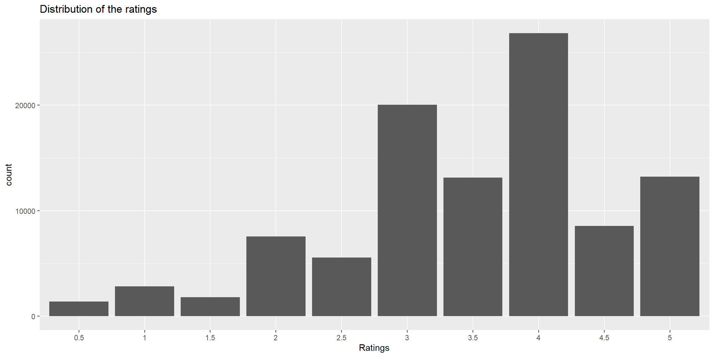
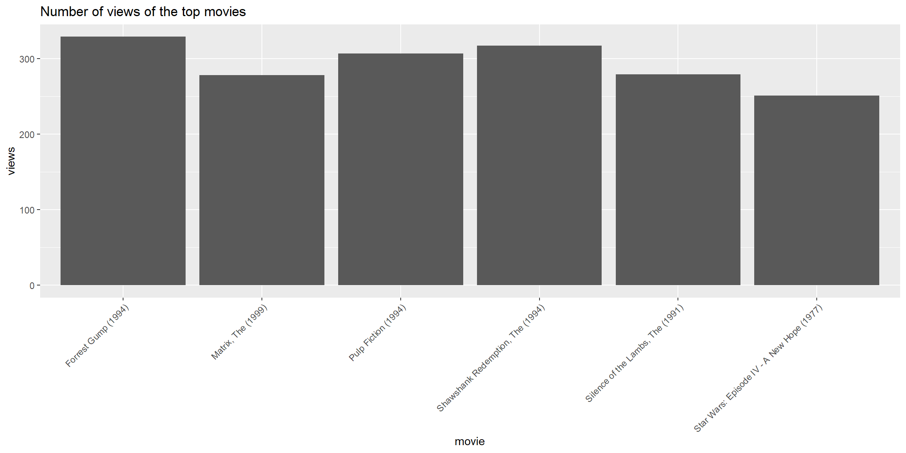
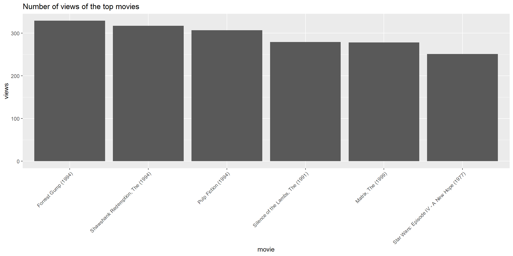
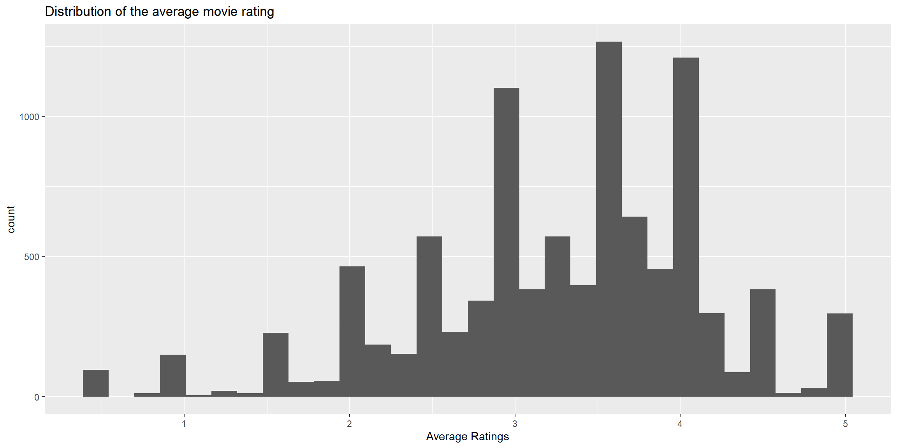
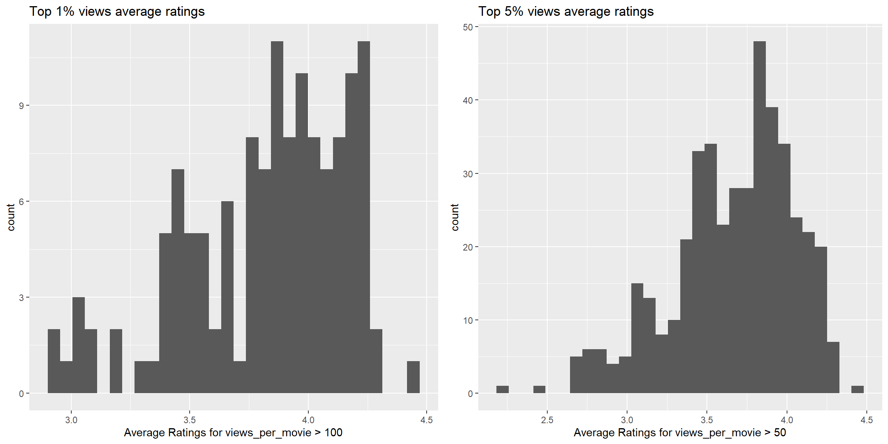
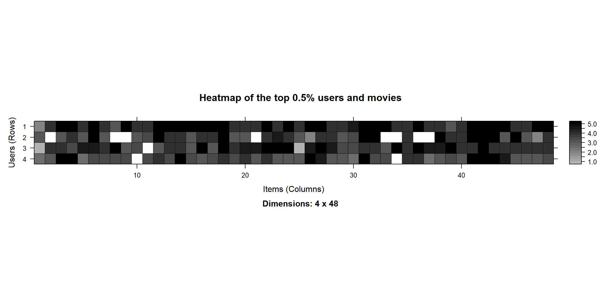
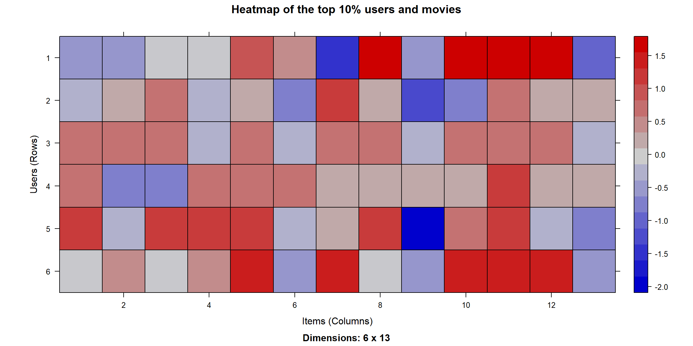
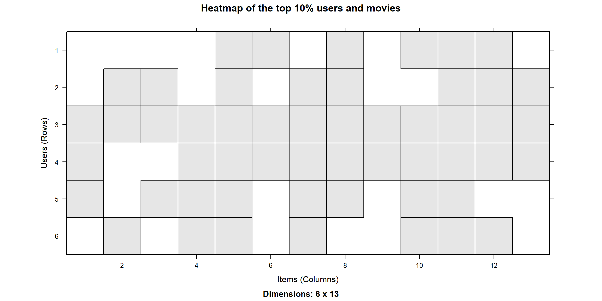

Sec 6 Self-learning
6.1 [EDA] MovieLens
6.1.1 Get data
Download ml-latest-small.zip from the newly released MovieLens for education. Compile a dataset as the one, MovieLense.csv, used by code.
-
列出資料夾中的所有
.csv檔案，檢視.csv檔的欄位名稱及內容
## [1] "links.csv" "movies.csv" "ratings.csv" "README.txt" "tags.csv"file.list <- paste0("data/ml-latest-small/", list.files("data/ml-latest-small", pattern = ".csv"))
lapply(file.list, function(x) head(read.csv(x),1))## [[1]]
## movieId imdbId tmdbId
## 1 1 114709 862
##
## [[2]]
## movieId title genres
## 1 1 Toy Story (1995) Adventure|Animation|Children|Comedy|Fantasy
##
## [[3]]
## userId movieId rating timestamp
## 1 1 1 4 964982703
##
## [[4]]
## userId movieId tag timestamp
## 1 2 60756 funny 1445714994裡面會用到的是movies.csv和ratings.csv，tag.csv裡的tag是使用者定義的，因此不考慮；而movies.csv裡的genres是從有限個數的類別中選出來的。
-
保留
ratings.csv中的 userId、rating，和movies.csv中的 title、genres，使用merger以movieId串聯兩個資料集
rating <- read.csv("data/ml-latest-small/ratings.csv")
movies <- read.csv("data/ml-latest-small/movies.csv")
df.merge <- merge(rating[,-4], movies, by="movieId")
df.merge <- df.merge[order(df.merge$userId),]
head(df.merge, 3) |> knitr::kable(row.names = F)| movieId | userId | rating | title | genres |
|---|---|---|---|---|
| 1 | 1 | 4 | Toy Story (1995) | Adventure|Animation|Children|Comedy|Fantasy |
| 3 | 1 | 4 | Grumpier Old Men (1995) | Comedy|Romance |
| 6 | 1 | 4 | Heat (1995) | Action|Crime|Thriller |
總共有9742部電影，所有使用者看過的電影有9724部，有18部電影沒有被任何使用者看過
library(dplyr)
id <- unique(movies$movieId)[!(unique(movies$movieId) %in% unique(rating$movieId))]
movies %>% filter(movieId %in% id) %>% knitr::kable()| movieId | title | genres |
|---|---|---|
| 1076 | Innocents, The (1961) | Drama|Horror|Thriller |
| 2939 | Niagara (1953) | Drama|Thriller |
| 3338 | For All Mankind (1989) | Documentary |
| 3456 | Color of Paradise, The (Rang-e khoda) (1999) | Drama |
| 4194 | I Know Where I’m Going! (1945) | Drama|Romance|War |
| 5721 | Chosen, The (1981) | Drama |
| 6668 | Road Home, The (Wo de fu qin mu qin) (1999) | Drama|Romance |
| 6849 | Scrooge (1970) | Drama|Fantasy|Musical |
| 7020 | Proof (1991) | Comedy|Drama|Romance |
| 7792 | Parallax View, The (1974) | Thriller |
| 8765 | This Gun for Hire (1942) | Crime|Film-Noir|Thriller |
| 25855 | Roaring Twenties, The (1939) | Crime|Drama|Thriller |
| 26085 | Mutiny on the Bounty (1962) | Adventure|Drama|Romance |
| 30892 | In the Realms of the Unreal (2004) | Animation|Documentary |
| 32160 | Twentieth Century (1934) | Comedy |
| 32371 | Call Northside 777 (1948) | Crime|Drama|Film-Noir |
| 34482 | Browning Version, The (1951) | Drama |
| 85565 | Chalet Girl (2011) | Comedy|Romance |
但是合併完的資料共有9719部電影 (以標題計算)，檢視以後發現 id 個數比 title 多，表示有標題一樣但 id 不一樣的問題
## [1] 9724
## [1] 9719id 比 title 多了 5 個，
第一個方法使用基本的套件，第二個方法使用 dplyr 套件，兩種方法找到的不太一樣
duplicated會剔除第一個然後保留重複的，所以!duplicated會保留第一個dplyr以分組後的個數來挑選
# Method 1: base R
test <- df.merge[!duplicated(df.merge$movieId),c("movieId","title")]
test[duplicated(test$title),] |> knitr::kable(row.names = F)| movieId | title |
|---|---|
| 64997 | War of the Worlds (2005) |
| 144606 | Confessions of a Dangerous Mind (2002) |
| 26958 | Emma (1996) |
| 168358 | Saturn 3 (1980) |
| 32600 | Eros (2004) |
# Method 2: dplyr
library(dplyr)
tmp <- df.merge %>%
group_by(title) %>%
filter(n()>1) %>%
select(c("movieId","title"))
tmp %>%
group_by(movieId) %>%
filter(n()==1) %>%
knitr::kable()| movieId | title |
|---|---|
| 144606 | Confessions of a Dangerous Mind (2002) |
| 147002 | Eros (2004) |
| 26958 | Emma (1996) |
| 168358 | Saturn 3 (1980) |
| 32600 | Eros (2004) |
- M1:
- 顯示不同 id 但 title 相同的資料
- M2:
- 沒有”War of the Worlds (2005)“，因為第2步只保留出現過1次的，但它的兩個id都出現超過1次
- 有兩個”Eros (2004)“，因為兩個id都只出現一次
# df.merge[df.merge$title=="Emma (1996)",]
# df.merge[df.merge$title=="Confessions of a Dangerous Mind (2002)",]
# df.merge[df.merge$title=="Saturn 3 (1980)",] %>% knitr::kable()
df.merge[df.merge$title=="Eros (2004)",] %>% knitr::kable(row.names = F)| movieId | userId | rating | title | genres |
|---|---|---|---|---|
| 147002 | 318 | 4.0 | Eros (2004) | Drama|Romance |
| 32600 | 606 | 3.5 | Eros (2004) | Drama |
tmp <- df.merge[df.merge$title=="War of the Worlds (2005)",]
tmp[order(tmp$movieId),] %>%
tail(5) %>%
knitr::kable(row.names = F)| movieId | userId | rating | title | genres |
|---|---|---|---|---|
| 34048 | 590 | 2.5 | War of the Worlds (2005) | Action|Adventure|Sci-Fi|Thriller |
| 34048 | 608 | 4.5 | War of the Worlds (2005) | Action|Adventure|Sci-Fi|Thriller |
| 34048 | 610 | 4.0 | War of the Worlds (2005) | Action|Adventure|Sci-Fi|Thriller |
| 64997 | 28 | 3.5 | War of the Worlds (2005) | Action|Sci-Fi |
| 64997 | 68 | 2.5 | War of the Worlds (2005) | Action|Sci-Fi |
可以看到相同片名但不同id是因為類型(genres)不同
- 資料轉換成矩陣
Notice: 使用as(df, "realRatingMatrix")，df的欄位要按照user, item, rating的順序
library(recommenderlab)
df <- df.merge %>%
select("userId", "title", "rating")
ratMatr <- as(df, "realRatingMatrix")
dim(ratMatr)## [1] 610 9719- 資料包含610個使用者、9719部電影
- 儲存空間
- data.frame: 3233872 bytes
- realRatingMatrix: 2180896 bytes
- matrix: 48358832 bytes (是realRatingMatrix的9.05倍)
6.1.2 EDA
## [1] "data" "normalize"- 評分為0~8，包含小數
7跟8怎麼來的(*´･д･)?
knitr::kable(list(data.frame(table(rat), row.names = NULL),
data.frame(table(df$rating))),
caption = "Rating Matrix (左) & Raw data (右)")
|
|
從資料發現有些使用者對同一部影片評了兩次，另外這些電影都出現在前面提到的同名不同ID的電影裡，使用者評了兩次有可能是評了不同類型但相同片名的電影。
出現7跟8可能是因為在轉換物件類型時，realRatingMatrix把同個使用者評分同一部電影的評分加總了
## # A tibble: 8 × 3
## # Groups: userId, title [4]
## userId title rating
## <int> <chr> <dbl>
## 1 28 War of the Worlds (2005) 3.5
## 2 28 War of the Worlds (2005) 3.5
## 3 68 War of the Worlds (2005) 2
## 4 68 War of the Worlds (2005) 2.5
## 5 111 Confessions of a Dangerous Mind (2002) 4
## 6 111 Confessions of a Dangerous Mind (2002) 4
## 7 509 Emma (1996) 3.5
## 8 509 Emma (1996) 3.5- 根據文件，評分採用5星評分制，以半星為單位 (0.5 stars - 5.0 stars)，因此移除其他數值
- 大部分的評分為3, 4星
library(ggplot2)
ggplot(data.frame(rat), aes(x=factor(rat)))+
geom_bar()+
labs(title = "Distribution of the ratings",
x = "Ratings")
- Star Wars有最高的觀看數
views <- colCounts(ratMatr)
tab <- data.frame(
movie=names(views),
views=views
)
tab <- tab[order(tab$views, decreasing = TRUE), ]
ggplot(head(tab), aes(x=movie, y=views))+
geom_bar(stat="identity")+
theme(axis.text.x = element_text(angle = 45, hjust = 1)) +
labs(title = "Number of views of the top movies")
6.1.3 Adjust plot output
Please sort the x-axis by views, rather than by alphabet.
ggplot(head(tab), aes(x=reorder(movie,views,sum, decreasing=T), y=views))+
geom_bar(stat="identity")+
theme(axis.text.x = element_text(angle = 45, hjust = 1)) +
labs(title = "Number of views of the top movies",
x="movie")
6.1.4 Average Ratings
- 大部分電影的平均評分在3.5左右，其中有些評分為1或5，可能是因為只有少數人評分
avg_rat <- colMeans(ratMatr)
ggplot(data.frame(avg_rat), aes(x=avg_rat))+
geom_histogram()+
labs(title = "Distribution of the average movie rating",
x="Average Ratings")
- 保留超過50和100人觀看的電影
## 95%
## 47## 99%
## 115- 移除少數人觀看的電影後，大部分電影的平均評分在3.8左右
p1 <- ggplot(data.frame(avg_rat_99), aes(x=avg_rat_99))+
geom_histogram()+
labs(title = "Top 1% views average ratings",
x="Average Ratings for views_per_movie > 100")
p2 <- ggplot(data.frame(avg_rat_95), aes(x=avg_rat_95))+
geom_histogram()+
labs(title = "Top 5% views average ratings",
x="Average Ratings for views_per_movie > 50")
library(gridExtra)
grid.arrange(p1, p2, nrow=1)
6.1.5 Rating Matrix
- 保留大多人評分的電影和評分大多電影的人
min_movies <- quantile(rowCounts(ratMatr), 0.995)
min_users <- quantile(colCounts(ratMatr), 0.995)
image(ratMatr[rowCounts(ratMatr) > min_movies, colCounts(ratMatr) > min_users],
main = "Heatmap of the top 0.5% users and movies")
6.1.6 Normalize
- 保留評分超過400部電影的使用者和被超過100人評分的電影
## 90%
## 400## 99%
## 115rat_movies <- ratMatr[rowCounts(ratMatr) > 400,
colCounts(ratMatr) > 100]
min_movies <- quantile(rowCounts(rat_movies), .9)
min_users <- quantile(colCounts(rat_movies), .9)- Normalize
normalize(x, method="center", row=TRUE)method: “center”(減平均) or “Z-score”(再除標準差)
rat_movies_norm <- normalize(rat_movies)
image(rat_movies_norm[rowCounts(rat_movies_norm) > min_movies,
colCounts(rat_movies_norm) > min_users],
main = "Heatmap of the top 10% users and movies")
6.1.7 Binarization
- 二元分類
binarize(ratingMatrix, minRating = n)minRating: 評分大於等於minRating的為1，其餘為0
- 評分4(含)以上的為1，其餘為0
rat_movies_watched <- binarize(rat_movies, minRating = 4)
image(rat_movies_watched[rowCounts(rat_movies) > min_movies,
colCounts(rat_movies) > min_users],
main = "Heatmap of the top 10% users and movies")
6.2 [CF] MovieLens
temp=read.csv("data/MovieLense.csv")
MovieLense=as(temp,"realRatingMatrix")
ratings_movies <- MovieLense[rowCounts(MovieLense) > 50,
colCounts(MovieLense) > 100]
detail <- Recommender(data = ratings_movies, method = "IBCF") |>
getModel()
sim <- detail$sim |> as.matrix()
# sim <- ifelse(sim==0, NA, sim)6.2.1 Use similarity() to recheck Hand-on problem 1
similarity_items <- similarity(ratings_movies,
method = "cosine",
which = "items")
X=as.matrix(similarity_items)- 避開Sim=1的部分
- 每列取前30個
## [1] "matrix" "array"| 101 Dalmatians (1996) | 12 Angry Men (1957) | 2001: A Space Odyssey (1968) |
|---|---|---|
| NA | 0.9491 | 0.9378 |
| 0.9491 | NA | 0.9821 |
| 0.9378 | 0.9821 | NA |
我們可以看到similarity計算出來自己跟自己的相似度為NA，因此不用擔心取前30個最相似的電影會挑到自己
top30 <- apply(X, 1, function(x){
top_val <- sort(x, decreasing = T) |> head(30)
out <- x
out[!(x %in% top_val)] <- NA
return(out)
}) |> t()
apply(top30,1,function(x) sum(x>0, na.rm = T)) |> table()##
## 30
## 332確認每列都只有保留30個相似度
identical(top30, sim)
top30[1:4,1:3] |> pander::pander(row.names=F)
sim[1:4,1:3] |> pander::pander(row.names=F)## [1] FALSE| 101 Dalmatians (1996) | 12 Angry Men (1957) | 2001: A Space Odyssey (1968) |
|---|---|---|
| NA | NA | NA |
| NA | NA | NA |
| NA | 0.9821 | NA |
| NA | NA | NA |
| 101 Dalmatians (1996) | 12 Angry Men (1957) | 2001: A Space Odyssey (1968) |
|---|---|---|
| 0 | 0 | 0 |
| 0 | 0 | 0 |
| 0 | 0 | 0 |
| 0.6645 | 0 | 0 |
Normalize
但是和使用Recommender得到的相似度不一樣，從表5.1可以看到normalize預設是”center”，因此我們嘗試先把資料的平均歸到0。
normalize(x, method="center", row=TRUE)center_ratings_movies <- normalize(ratings_movies)
center_X <- similarity(center_ratings_movies,
method = "cosine",
which = "items") |>
as.matrix()
center_top30 <- apply(center_X, 1, function(x){
top_val <- sort(x, decreasing = T) |> head(30)
out <- x
out[!(x %in% top_val)] <- NA
return(out)
}) |> t()
identical(center_top30, sim)## [1] FALSE可以發現把realRatingMatrix中每列都正規化到平均為0後，再計算相似度就可以得到和Recommender一樣的數值
6.2.3 Why the following code get different results between Hand-on problem 2
ratingTest=as(ratings_movies,"matrix")
rating.test <- ifelse(is.na(ratingTest),0,ratingTest)
# dim(rating.test) # 560 x 332
# dim(as.matrix(detail$sim)) # 332 x 332
# dim(sim) # 332 x 332
Recom=rating.test %*% sim
# dim(Recom) # 560 x 332表6.2列出了上面程式碼中計算的結果，可以看到和Recommender推薦的結果(表5.3)不太一樣
data.frame(
movie = Recom[1,][order(Recom[1,], decreasing = TRUE)][1:6]
) |> knitr::kable(caption = "前6部推薦的電影")| movie | |
|---|---|
| Close Shave, A (1995) | 155 |
| Wrong Trousers, The (1993) | 147 |
| Chasing Amy (1997) | 134 |
| Usual Suspects, The (1995) | 123 |
| Shawshank Redemption, The (1994) | 114 |
| Good Will Hunting (1997) | 110 |
從這一節中可以知道Recommender的預設是會對資料先進行正規化的，所以這邊也同樣先嘗試對ratings_movies正規化後得到center_ratings_movies
ratingTest=as(center_ratings_movies,"matrix")
norm_rating.test <- ifelse(is.na(ratingTest),0,ratingTest)
new_Recom=norm_rating.test %*% sim表6.3列出了正規化後的結果，可以看到和表6.2相比只有一個不同
data.frame(
movie = new_Recom[1,][order(new_Recom[1,], decreasing = TRUE)][1:6]
) |> knitr::kable(caption = "正規化後前6部推薦的電影")| movie | |
|---|---|
| Wrong Trousers, The (1993) | 23 |
| Close Shave, A (1995) | 19 |
| Sling Blade (1996) | 18 |
| Chasing Amy (1997) | 18 |
| Star Wars (1977) | 17 |
| Usual Suspects, The (1995) | 16 |
從得到的Recom可以發現它計算了所有的評分，也就是說它把已經看過的電影也一起計算了
##
## FALSE
## 185920rat.mat1 <- as(ratings_movies[1,], "matrix")
movie1 <- rat.mat1 |> colnames()
rat.mat1[,c("Wrong Trousers, The (1993)","Close Shave, A (1995)")]## Wrong Trousers, The (1993) Close Shave, A (1995)
## 5 NA我們可以看到是”Wrong Trousers, The (1993)“已經被評過分了，所以在查看時要先排除已經被看過的電影
recc1 <- Recom[1,][is.na(rat.mat1)]
data.frame(
movie = recc1[order(recc1, decreasing = TRUE)][1:6]
) |> knitr::kable(caption = "未正規化")
new_recc1 <- new_Recom[1,][is.na(rat.mat1)]
data.frame(
movie = new_recc1[order(new_recc1, decreasing = TRUE)][1:6]
) |> knitr::kable(caption = "正規化")| movie | |
|---|---|
| Close Shave, A (1995) | 155 |
| Casablanca (1942) | 102 |
| Lawrence of Arabia (1962) | 101 |
| As Good As It Gets (1997) | 97 |
| Manchurian Candidate, The (1962) | 95 |
| Secrets & Lies (1996) | 93 |
| movie | |
|---|---|
| Close Shave, A (1995) | 19 |
| Casablanca (1942) | 14 |
| Schindler’s List (1993) | 13 |
| L.A. Confidential (1997) | 12 |
| Lawrence of Arabia (1962) | 12 |
| Rear Window (1954) | 11 |
兩種結果只有2部電影不同，和Recommender推薦相同的只有”Casablanca (1942)“和”Schindler’s List (1993)“兩部
根據表5.1可以看到參數中還有一個\(\alpha\)預設為0.5，這裡提到\(\alpha\)被用來排除項目預測因子，以減少熱門項目的偏見，並尋找更具區別性的項目。應該是一個懲罰項的作用